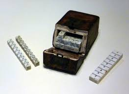
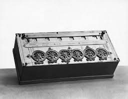
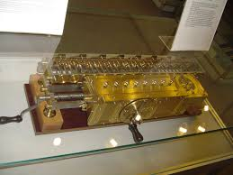
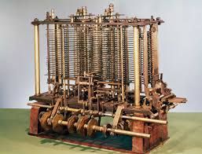
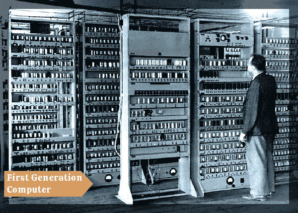
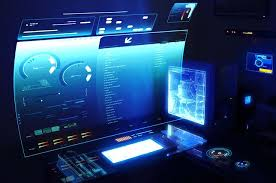

The History of Computers
Abacus
The abacus, the earliest known calculating device, demonstrated principles of representing and manipulating numbers. Its use fostered mathematical thinking and problem-solving skills, influencing the development of computational devices.

Napier's Bone
Invented by John Napier in the early 17th century, Napier's Bones were a manually-operated calculating device used for multiplication, division, and other mathematical operations. They consisted of a set of numbered rods or bones, which when aligned properly, facilitated calculations through a method of multiplication by addition.

Pascal Calculators
Developed by Blaise Pascal in the 17th century, Pascal's calculators were mechanical devices used for addition and subtraction. The most famous among them is the Pascaline, a mechanical calculator with a series of gears and wheels that enabled users to perform arithmetic operations.

Leibniz Calculator
Designed by Gottfried Wilhelm Leibniz in the late 17th century, the Leibniz Calculator was an advanced mechanical calculator capable of performing multiplication and division as well as addition and subtraction. It introduced the stepped drum mechanism, which was a significant advancement in calculator design.

Analytical Engine
Conceived by Charles Babbage in the 19th century, the Analytical Engine was an early mechanical general-purpose computer. Although never fully completed, it laid the conceptual foundation for modern computers. It featured components such as a central processing unit (CPU), memory, and input/output devices, and was programmable using punched cards.

First Generation Vacuum Tube Computer
Developed in the mid-20th century, first-generation computers used vacuum tubes as their primary electronic components. These computers were large, expensive, and consumed a considerable amount of power. Examples include the ENIAC and UNIVAC computers, which were used for tasks such as numerical calculations and codebreaking during World War II.

Third Generation Integrated Circuit
Introduced in the 1960s, third-generation computers utilized integrated circuits (ICs) instead of individual transistors and vacuum tubes. This led to significant reductions in size, cost, and power consumption, while also increasing computing power and reliability. Third-generation computers marked the beginning of widespread commercial use of computers.
